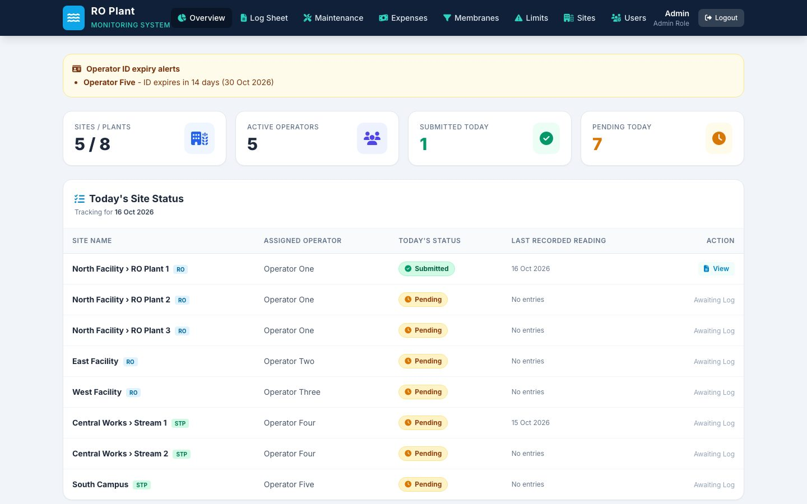
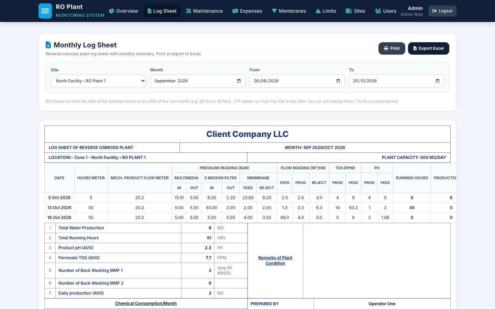
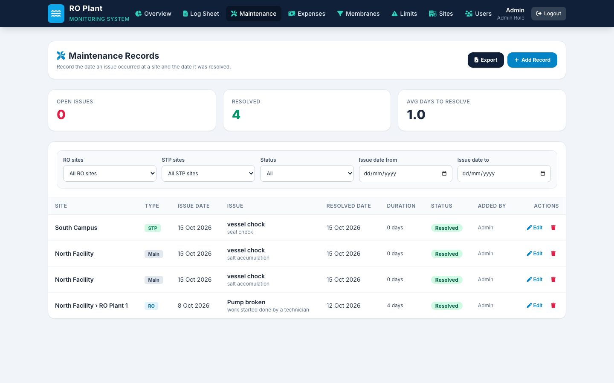
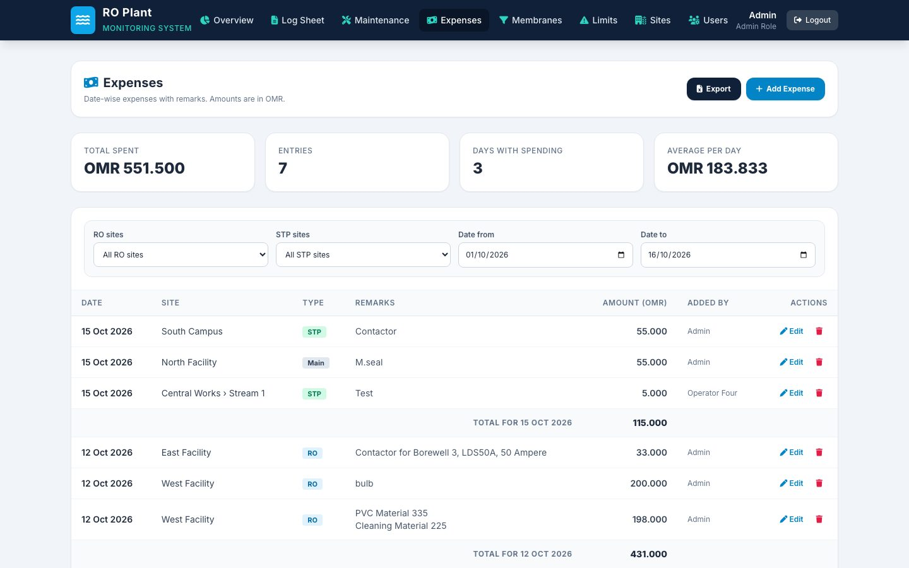
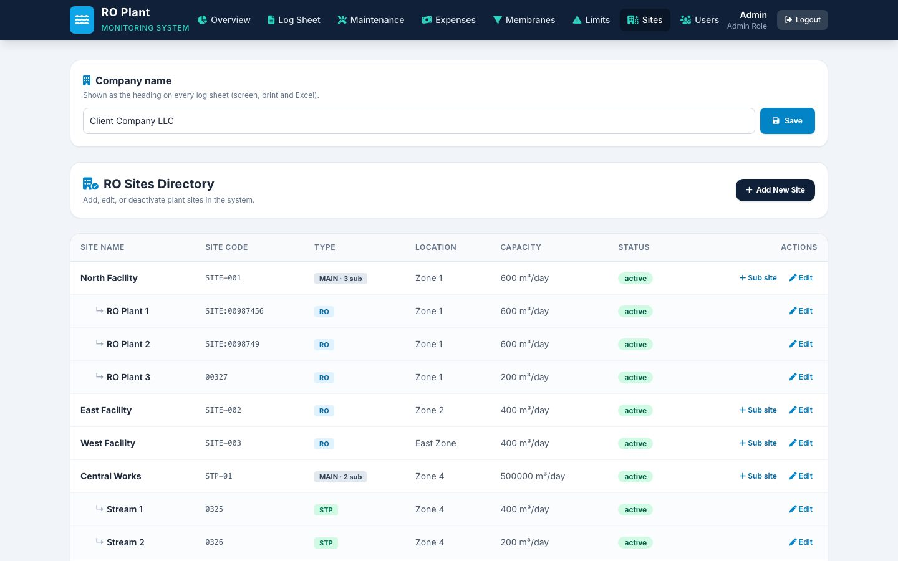
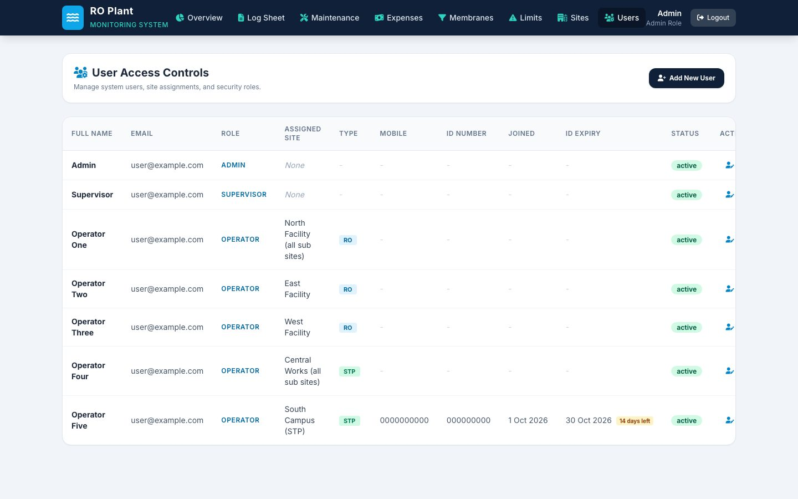

Case study · Business systems
Water-plant monitoring and reporting system
A web system for daily log sheets at reverse osmosis and sewage plants: operator readings, supervisor dashboards and print-ready monthly sheets.
At a glance
- Who it's for
- Plant operators, supervisors and administrators running several water plants.
- Core stack
- Single-page web app, PHP API, Tailwind CSS
- What sets it apart
- A conventional plant log sheet produced automatically from daily entries, with limits that flag bad readings only to supervisors.
The live system
Screens captured from the running admin account in October 2026. Client, site, operator and contact names are replaced.






The challenge
A facilities company runs reverse osmosis (RO) plants and sewage treatment plants (STP) at several customer sites. Each plant has an operator who records pressures, flows, TDS and pH every day, and the results have to be compiled into a monthly log sheet for the client.
Paper or spreadsheet logging tends to mean late entries noticed only at month end, out-of-range pressures that go unflagged, and maintenance and spend kept in separate places. Supervisors could not see at a glance which plants had reported today.
The solution
A browser-based system with three roles. Operators see only their own site and a single daily reading form. Supervisors and admins see a dashboard of who has submitted today, every reading in a filterable table, and the monthly log sheet generated from those readings.
Running hours and water production are calculated from the meter values entered, so operators do not do the arithmetic. Pressure limits are set per site and period; readings over a limit are shown in red to supervisors and admins only. Maintenance, expenses and membrane vessel status sit in the same system.
Key features
What the system does, as seen in the running application.
- 01
Daily operator reading
One form per site per day for hours meter, product flow meter, pressures, flows, TDS and pH, with backwash timing and automatic running hours and production.
- 02
Today's site status
A dashboard showing submitted and pending sites, the assigned operator and the last recorded reading for each.
- 03
Monthly log sheet
A plant log sheet generated from daily readings, with monthly totals and averages, remarks, chemical consumption and sign-off fields. Print or export to Excel. RO periods run 26th to 25th, STP periods 21st to 20th.
- 04
Pressure limits
Maximum pressure per stage by site and period, with the most specific limit winning. Breaches show in red to admins and supervisors, never to operators.
- 05
Membrane vessels
Up to 30 pressure vessels per site, enabled by an admin so operators see only the vessels that exist, with a monthly feed and reject sheet.
- 06
Maintenance and expenses
Issues with raised and resolved dates, average days to resolve, and date-wise spending with daily totals. Both export to Excel.
- 07
Sites and sub-sites
Main sites with several sub-sites, RO and STP types, capacity and active status. The company name on every sheet is editable.
- 08
Users and ID expiry alerts
Admin, supervisor and operator roles with site assignment, and a warning on the dashboard when an operator's ID is about to expire.
Implementation notes
Decisions worth knowing about.
Follow the familiar plant log
The log sheet layout follows a conventional plant log, with remarks, chemical use and sign-off fields, so it prints as a familiar document.
Role-based views
Operators get a single-purpose screen; limits and red marks are withheld from them so readings are recorded as measured.
Calculated, not typed
Running hours and production are derived from meter values, which removes a common source of arithmetic mistakes.
Lightweight front end
The interface is one page that talks to a single PHP endpoint, with no build step to maintain.
Technology stack
Taken from the delivered application.
- Frontend
- Single-page HTML and JavaScript
- Tailwind CSS
- Font Awesome
- Inter
- Backend
- PHP API (single endpoint)
- Reporting
- SheetJS (Excel export)
- Print stylesheet (A4)
Business value
What the system enables. No numbers are claimed.
- Supervisors see which plants have reported today without phoning operators.
- Month-end sheets are produced from daily data instead of being retyped.
- Out-of-range pressures are visible to supervisors the day they happen.
- Maintenance history and spend are kept per site in one place.
- One system covers both RO and STP plants and their sub-sites.
Need a system like this built?
Tell us what it needs to do and we will scope it with you on a call.